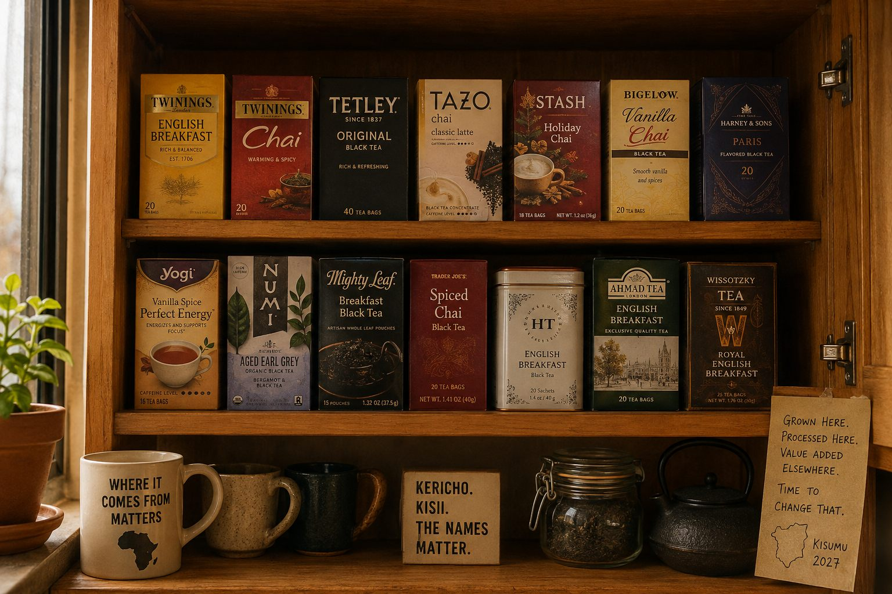

Between Kenya and My Cupboard
Food Investigation · Behind the Label Series
Standing here in my kitchen, looking at a shelf full of tea, trying to decide which to brew. Tea is a passion for me, I drink it every day, often more than once, and I've built up a nice variety of flavors and types to choose from. Black tea. Red tea. Spiced chai. Holiday varieties. Limited runs. You name it, and there's a good chance it has passed through these cupboards, been steeped in one of these cups, and been sipped while I gazed out one of these windows, sitting up late studying, or on those long calls to the ones I hold dear. As faith would have it, as I've learned more about Kenya, I've come across the love of tea, or chai that runs deep there. Kenya is among the biggest growers and exporters of tea in the world. So why is it that when I look through my collection, none of the labels say Kericho? No box says Kisii. No farmer's names. No factory. Just branding, British sounding names, soft colors, words like "premium blend." Somewhere between Kenya and my cupboard the word Kenya disappeared. That's not me being a careless buyer. That's the system doing exactly what it was built to do.
Kenya is one of the largest exporters of black tea in the world, moving massive volumes through the Mombasa auction every year. Most of that tea leaves the country the same way: loose, unbranded, and destined to be blended. Only a small fraction, roughly 5%, by some estimates leaves as a finished, value added product like packaged tea bags. The rest is built for a different stage of the chain and that stage has an address.
Tea leaves Kenya, gets bought by global traders, and a significant portion moves into a system anchored in places like Dubai. The Dubai Multi Commodities Centre (DMCC) runs one of the most important tea hubs in the world. Storage, blending, packaging, and re-export all in one place. Inside that system, facilities like the Dubai Tea Trading Centre handle tens of thousands of tons a year, turning bulk shipments into finished retail products. Unilever's Lipton factory in the Jebel Ali free zone has been reported running more than two million tea bags an hour, around the clock. Companies you already know sit inside that loop. Finlays operates across Kenya and Dubai, sourcing, blending, and distributing tea globally. Van Rees, a major tea trading multinational, works the same channels, buying at the Mombasa auction, blending, packing for export. Lipton, the corporate descendant of Brooke Bond that built the Kericho estates under colonial rule, sold off those East African estates in 2024 but still sources Kenyan leaf to blend and sell; its PG Tips line is predominantly Kenyan grown. Even KTDA, which represents more than 600,000 Kenyan smallholder farmers, feeds into a system where most tea still exits as bulk before identity is attached.
So the loop looks like this. Tea is grown in Kericho or Kisii. Sold through Mombasa. Bought by multinational traders. Shipped to Dubai. Blended with tea from India or Sri Lanka. Standardized. Packed into tea bags. Branded. Then shipped back out to the world. Including me. That's why brands on U.S. shelves, Lipton, Twinings, Tetley, and store labels, almost all rely on multi origin blends where Kenyan tea plays a specific role. It gives color, strength, and consistency. It's engineered for that. It's in the cup. It's just not on the label, and that's where the money shifts.
Tea is one of Kenya's biggest export earners, bringing in around $1.7 billion (2024), but bulk tea trades at commodity prices. The real margins show up later, in blending, packaging, branding, and distribution. In other words, in the box, not the leaf. That's where value multiplies, and that part of the chain is often happening outside the country. This didn't start as a trade quirk. It started as control. Tea in Kenya was built under colonial rule, on land reserved for settler estates, with Africans largely excluded from growing it commercially in the early years. After independence, smallholder farmers became the backbone of production. That part changed. But the export model, grown here, finished elsewhere, stayed intact.
So now you have a country producing massive volumes of tea, supporting hundreds of thousands of farmers, and still watching the highest-value part of the product take shape somewhere else. And then there's the part nobody says out loud. Kenya doesn't just export tea, it imports it too. In 2024 it brought in about $48 million worth (OEC). Some of that is other origin leaf destined for blending, so I won't pretend every returning box is Kenya's own crop bought back. But follow the split that's undeniable. Bulk tea trades at auction for commodity prices; blended, packaged, branded tea sells for a multiple of that, and increasingly that premium version is sold inside Kenya. KETEPA's packaged tea commands far more per kilo than the raw CTC leaving Mombasa. In early 2026, the agribusiness firm Kakuzi launched a domestic brand pitched on selling Kenyans the export grade leaf that normally ships out. So a country can grow the tea, process the tea, and export the tea, and then watch the finished, named, marked up version come home as the premium product. The leaf was always ours. The value got added somewhere else, and now it's sold back to us wearing a price tag.
Right now, this is something I notice in my cupboard. Soon, it won't be. I'm planning on moving to Kisumu. Building a life there. Cooking there. And Kisumu sits within reach of some of the best tea growing land on earth. So the question changes.
Right now, I'm asking why I can't find Kenyan tea in the Bay Area. Soon, I'll be asking what stops me from finding it at the source. Because if I'm pouring chai on the edge of Lake Victoria, water, milk, ginger, cardamom, tea, I should know where that tea came from. Not just the country, but the factory, the cooperative, the people.
And if I don't, then the loop didn't break.
It followed me.
— Chef Dumela